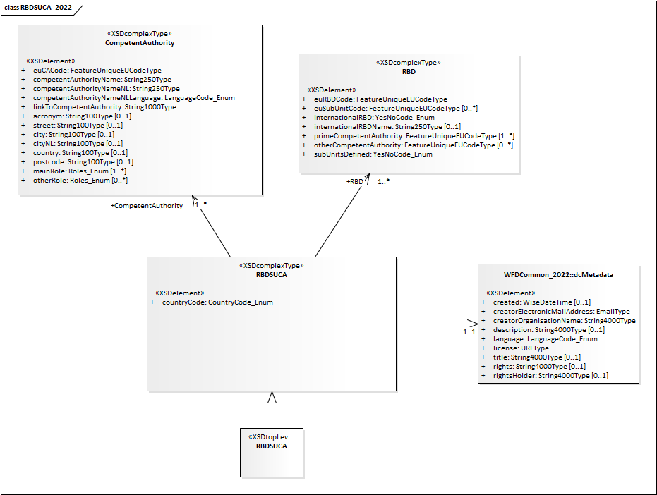

River basin districts and competent authorities#
Last update: 2026-08-24
Purpose and overview#
This section revises the River Basin Districts, Subunits and Competent Authorities classes used in the 3rd cycle of reporting of the Water Framework Directive River Basin Management Plans (Figure 1). It also revises the associated spatial data in the RiverBasinDistrict dataset and SubUnit dataset (Figure 2).
{kind=link}

Figure 1 River Basin Districts, Subunits and Competent Authorities schema - 3rd cycle - Obsolete#
---
config:
class:
hideEmptyMembersBox: true
layout: dagre
theme: default
---
classDiagram
direction TB
class RiverBasinDistrict["«FeatureType»
RiverBasinDistrict"] {
+ geometry: GM_MultiSurface
+ inspireIdLocalId: String254LeadingLetterOrNum
+ inspireIdNamespace: String254LeadingLetterOrNum
+ inspireIdVersionId: String25Type [0..1]
+ thematicIdIdentifier: FeatureUniqueEUCodeType
+ thematicIdIdentifierScheme: IdentifierScheme
+ beginLifespanVersion: WiseDateTimeType [0..1]
+ endLifespanVersion: WiseDateTimeType [0..1]
+ predecessorsIdentifier: String254LeadingLetterOrNum [0..1]
+ predecessorsIdentifierScheme: IdentifierScheme [0..1]
+ successorsIdentifier: String254LeadingLetterOrNum [0..1]
+ successorsIdentifierScheme: IdentifierScheme [0..1]
+ wiseEvolutionType: WiseEvolutionTypeValue
+ nameTextInternational: String254Latin
+ nameText: String254Type
+ nameLanguage: WiseLanguageCode_Enum
+ designationPeriodBegin: WiseDateTimeType
+ designationPeriodEnd: WiseDateTimeType [0..1]
+ zoneType: ZoneTypeCode
+ legalBasisName: String254LeadingLetterOrNum [0..1]
+ legalBasisLink: URLType [0..1]
+ legalBasisLevel: LegislationLevelValue [0..1]
+ relatedZoneTransboundaryIdentifier: String254LeadingLetterOrNum [0..1]
+ relatedZoneTransboundaryIdentifierScheme: IdentifierScheme [0..1]
+ sizeValue: PositiveDecimalType [0..1]
+ sizeUom: UomSize [0..1]
+ link: URLType [0..1]
}
class FeatureCollectionRBD["«FeatureType»
FeatureCollection"] {
}
class SubUnit["«FeatureType»
SubUnit"] {
+ geometry: GM_MultiSurface
+ inspireIdLocalId: String254LeadingLetterOrNum
+ inspireIdNamespace: String254LeadingLetterOrNum
+ inspireIdVersionId: String25Type [0..1]
+ thematicIdIdentifier: FeatureUniqueEUCodeType
+ thematicIdIdentifierScheme: IdentifierScheme
+ beginLifespanVersion: WiseDateTimeType [0..1]
+ endLifespanVersion: WiseDateTimeType [0..1]
+ predecessorsIdentifier: String254LeadingLetterOrNum [0..1]
+ predecessorsIdentifierScheme: IdentifierScheme [0..1]
+ successorsIdentifier: String254LeadingLetterOrNum [0..1]
+ successorsIdentifierScheme: IdentifierScheme [0..1]
+ wiseEvolutionType: WiseEvolutionTypeValue
+ nameTextInternational: String254Latin
+ nameText: String254Type
+ nameLanguage: WiseLanguageCode_Enum
+ designationPeriodBegin: WiseDateTimeType
+ designationPeriodEnd: WiseDateTimeType [0..1]
+ zoneType: ZoneTypeCode
+ specialisedZoneType: SpecialisedZoneTypeCode
+ legalBasisName: String254LeadingLetterOrNum [0..1]
+ legalBasisLink: URLType [0..1]
+ legalBasisLevel: LegislationLevelValue [0..1]
+ relatedZoneIdentifier: FeatureUniqueEUCodeType
+ relatedZoneIdentifierScheme: IdentifierScheme
+ relatedZoneTransboundaryIdentifier: String254LeadingLetterOrNum [0..1]
+ relatedZoneTransboundaryIdentifierScheme: IdentifierScheme [0..1]
+ sizeValue: PositiveDecimalType [0..1]
+ sizeUom: UomSize [0..1]
+ link: URLType [0..1]
}
class FeatureCollectionSU["«FeatureType»
FeatureCollection"] {
}
RiverBasinDistrict "1..*" <-- FeatureCollectionRBD : + featureMember
SubUnit "1..*" <-- FeatureCollectionSU : + featureMember
Figure 2 RiverBasinDistrict and Subunit spatial datasets - 3rd cycle - Obsolete#
A proposal is presented for the electronic reporting in the 4th cycle:
The reporting of the units of management (i.e. the River Basin Districts) and of the competent authorities is combined into a single dataflow.
The overall structure of the new River Basin Districts and Competent Authorities dataflow is aligned with similar dataflows, e.g. under the Floods Directive [1].
Reporting is only requested under the following conditions:
If there are changes to the spatial delineation and/or the identifiers of one or more River Basin Districts (since the 3rd cycle), the spatial dataset must be reported.
If there are changes to the competent authorities or their roles, the descriptive data must be reported in accordance with Article 3(8) and 3(9) of the WFD.
Data providers can specify which datasets are being updated (spatial data, descriptive data, or both).
Information about subunits is no longer requested.
The reporting of metadata has also been simplified.
Proposed structure - 4th cycle#
For the 4th cycle of reporting, the requested information is described below (see Figure 3):
---
config:
class:
hideEmptyMembersBox: true
layout: dagre
theme: neutral
---
classDiagram
direction TB
class dcMetadata{<<documents>>}
class Document {<<documents>>}
class CompetentAuthority{<<descriptive>>}
class RiverBasinDistrictCompetentAuthority{<<descriptive>>}
class RiverBasinDistrict{<<spatial>>}
dcMetadata ..> Document
CompetentAuthority "1" -- "1..n" RiverBasinDistrictCompetentAuthority
RiverBasinDistrictCompetentAuthority "1..n" -- "1" RiverBasinDistrict
classDef default fill:white,stroke:#000;
classDef forFixing fill:white,stroke:#f00;
Figure 3 River basin district and competent authorities dataflow - overview - 4th cycle#
Descriptive dataset - 4th cycle#
The Descriptive dataset contains two tables (Figure 4):
The
CompetentAuthoritytable contains basic information about each Competent Authority.The
RiverBasinDistrictCompetentAuthoritytable associates each Competent Authority with a River Basin District and specifies the role(s) of the competent authority in that RBD.
---
config:
class:
hideEmptyMembersBox: true
layout: dagre
theme: neutral
---
classDiagram
direction LR
class CompetentAuthority {
+ euCACode: wiseIdentifier
+ competentAuthorityName: string100
+ competentAuthorityNameNL: string100
+ competentAuthorityNameNLLanguage: Language
+ acronym: string100 [0..1]
+ street: string100 [0..1]
+ city: string100 [0..1]
+ country: string100 [0..1]
+ postCode: string50 [0..1]
+ url: URL [0..1]
}
class RiverBasinDistrictCompetentAuthority {
+ euRBDCode: wiseIdentifier
+ euCACode: wiseIdentifier
+ roleCode: Role [1..*]
}
CompetentAuthority "1" -- "1..*" RiverBasinDistrictCompetentAuthority
classDef default fill:white,stroke:#000;
classDef forFixing fill:white,stroke:#f00;
Figure 4 River Basin Districts and Competent Authorities - 4th cycle - Descriptive Data#
---
config:
class:
hideEmptyMembersBox: true
layout: dagre
theme: neutral
---
classDiagram
direction LR
class Role{
<<enumeration>>
pressureAndImpactAnalysis
economicAnalysis
monitoringOfSurfaceWater
monitoringOfGroundwater
assessmentOfStatusOfSurfaceWater
assessmentOfStatusOfGroundwater
preparationOfRBMP
preparationOfProgrammeOfMeasures
implementationOfMeasures
publicParticipation
enforcementOfRegulations
coordinationOfImplementation
reportingToTheEuropeanCommission
}
classDef default fill:white,stroke:#000;
classDef forFixing fill:white,stroke:#f00;
Figure 5 Codelist - 4th cycle - Role#
Spatial dataset - 4th cycle#
The Spatial dataset contains only the RiverBasinDistrict spatial data
(Figure 6).
As stated before, Subunits are no longer requested in the 4th cycle of reporting.
The following changes have been made to the RiverBasinDistrict spatial table
(in comparison to the 3rd cycle of reporting):
The attributes
sizeValueandsizeUomwere removed, because they can be derived from the reported geometry.Two attributes
relatedTransboundaryIdentifierandrelatedTransboundaryIdentifierSchemewere removed, because they are not required at EU level.All the date values are requested as YYYY-MM-DD, because that was the format used by all the data providers in the previous cycles (and therefore it is not necessary to maintain more variants). This applies to
beginLifespanVersion,endLifespanVersion,designationPeriodBegin,designationPeriodEnd.One attribute was moved from the descriptive dataset into the spatial dataset.
ThespecialisedZoneTypenow accepts the options'internationalRiverBasinDistrict'and'nationalRiverBasinDistrict'.The attributes
thematicIdIdentifierSchemeandzoneTypehave been kept for clarity’s sake. However, all records in theRiverBasinDistrictdataset have a constant value for these attributes.The attributes
successorsIdentifierandsuccessorsIdentifierSchemehave been kept for clarity’s sake. In the reported datasets, the value of these attributes will always be NULL. The appropriate value will be derived and included in the published WISE datasets for the 1st, 2nd and 3rd cycle RiverBasinDistrict datasets.
---
config:
class:
hideEmptyMembersBox: true
layout: dagre
theme: neutral
---
classDiagram
direction LR
class RiverBasinDistrict {
+ geometry_polygon: MultiPolygon
+ inspireIdLocalId: string254
+ inspireIdNamespace: string254
+ inspireIdVersionId: string25 [0..1]
+ thematicIdIdentifier: wiseIdentifier
+ thematicIdIdentifierScheme: IdentifierScheme
+ beginLifespanVersion: date [0..1]
+ endLifespanVersion: date [0..1]
+ predecessorsIdentifier: wiseIdentifier [0..n]
+ predecessorsIdentifierScheme: IdentifierScheme [0..1]
+ successorsIdentifier: wiseIdentifier [0..n]
+ successorsIdentifierScheme: IdentifierScheme [0..1]
+ wiseEvolutionType: WiseEvolutionType
+ nameTextInternational: string254
+ nameText: string254
+ nameLanguage: Language
+ designationPeriodBegin: date
+ designationPeriodEnd: date [0..1]
+ zoneType: ZoneType
+ specialisedZoneType: SpecialisedZoneType
+ legalBasisName: string254 [0..1]
+ legalBasisLink: URL [0..1]
+ legalBasisLevel: LegislationLevelValue [0..1]
+ link: URL [0..1]
}
classDef default fill:white,stroke:#000;
classDef forFixing fill:white,stroke:#f00;
Figure 6 Spatial dataset - RiverBasinDistrict - 4th cycle#
Documents dataset - 4th cycle#
The Documents dataset follows the standard structure used in various WISE dataflows (Figure 7):
The
dcMetadatatable is required and contains only one record per delivery (i.e. per country). It provides the basic Dublin Core metadata elements about the delivery.If required by the data providers, and especially if spatial data is being reported, the
licenseDocumentand themetadataDocumentattributes allow the provision of additional information about the dataset.The dcMetadata table also functions as a “manifest file” explaining:
if the delivery contains an update of the spatial data, set
updateSpatialData = 'yes'and/or if the delivery contains an update of the competent authorities or their roles, set
updateCompetentAuthorities= 'yes'
The
Documenttable is standard in the WISE dataflows: it allows the upload of documents (for example, PDFs) or the provision of a hyperlink to a document stored in a publicly accessible national web site.
---
config:
class:
hideEmptyMembersBox: true
layout: dagre
theme: neutral
---
classDiagram
direction LR
class dcMetadata {
«metadata»
+ title: string
+ creatorOrganisationName: string
+ creatorElectronicMailAddress: Email
+ description: string [0..1]
+ created: date [0..1]
+ language: Language [1..n]
+ license: Licence
+ rights: string [0..1]
+ rightsHolder: string [0..1]
+ licenseDocument: documentCode [0..n]
+ metadataDocument: documentCode [0..n]
«data-delivery-manifest»
+ updateCompetentAuthorities: YesNo
+ updateSpatialData: YesNo
}
class Document {
+ documentCode: wiseIdentifier
+ documentName: string250
+ hyperlink: URL [0..1]
+ documentFile: Attachment [0..1]
}
class Licence{
<<enumeration>>
CC0
CC_BY_4_0
exactMatch_CC_BY_4_0
narrowMatch_CC_BY_4_0
}
dcMetadata ..> Document: licenseDocument
dcMetadata ..> Document: metadataDocument
dcMetadata ..> Licence: license
classDef default fill:white,stroke:#000;
classDef forFixing fill:white,stroke:#f00;
Figure 7 River Basin Districts and Competent Authorities - 4th cycle - Documents#
Annexes - Data analysis - 3rd cycle#
This section contains some of the exploratory data analysis that supported the revision of the data model.
It is not relevant for the understanding of the proposed model, but may be informative for data providers involved in the testing phase of the 4th cycle dataflows.
About the EEA discodata service
The example queries can be executed interactively in the EEA discodata service.
Note that some queries may timeout.
If you need to analyse the entire European dataset, download it in CSV format.
For example, the link https://discodata.eea.europa.eu/download/WISE_WFD/v2r1/GWB_GroundWaterBody
downloads the data of the [WISE_WFD].[v2r1].[GWB_GroundWaterBody] table.
National and international RBDs#
The query below retrieves the information reporting during the 3rd cycle.
If the information is correct, and the delineation of the River Basin Districts did not change,
then it is not necessary to report the RiverBasinDistrict dataset again.
Show code
1-- https://discodata.eea.europa.eu/
2
3SELECT [countryCode]
4 ,[euRBDCode] AS [thematicIdIdentifier]
5 ,'euRBDCode' AS [thematicIdIdentifierScheme]
6 ,IIF([internationalRBD] = 'Yes', 'internationalRiverBasinDistrict', 'nationalRiverBasinDistrict')
7 AS [specialisedZoneType]
8FROM [WISE_WFD].[v2r1].[RBDSUCA_RBD]
9WHERE [cYear] = 2022
References#
Warning
The original document containing this revised model
can still be downloaded but should no longer be used.
See PROPOSAL - Version 2026.02.13 PDF